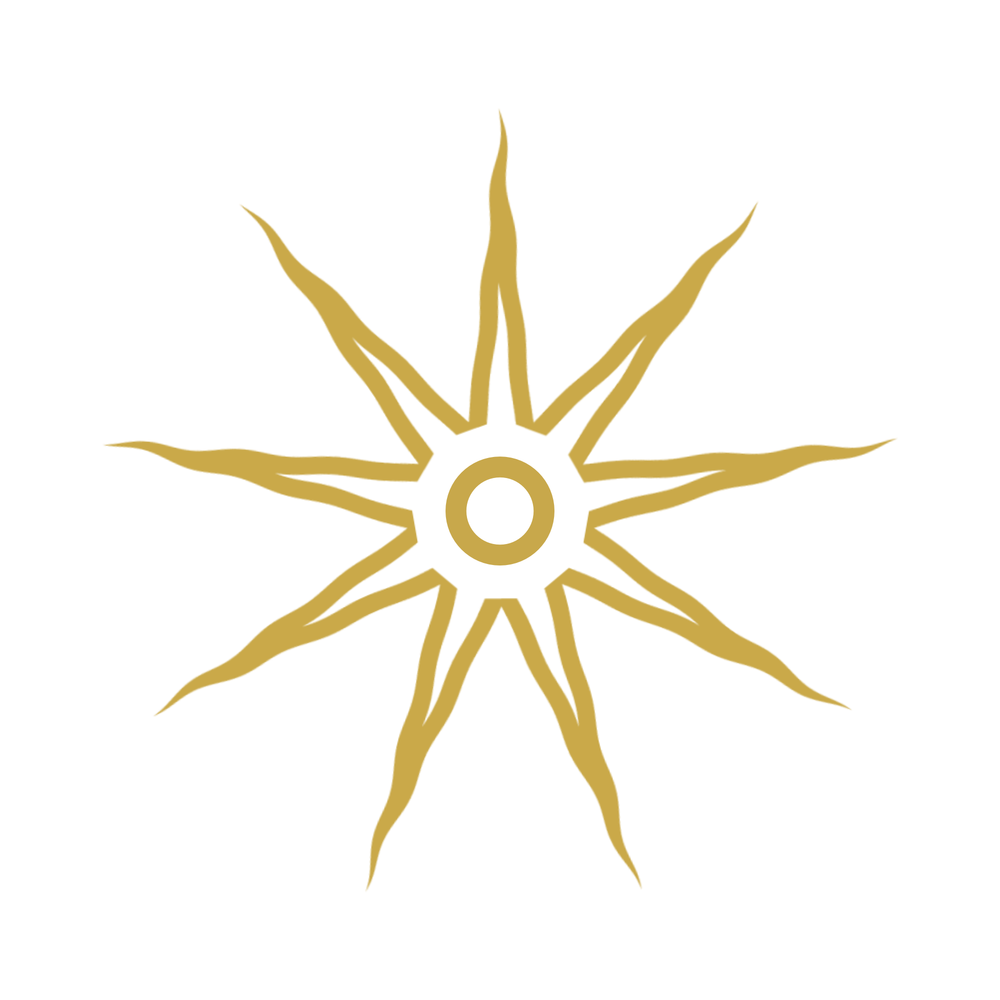
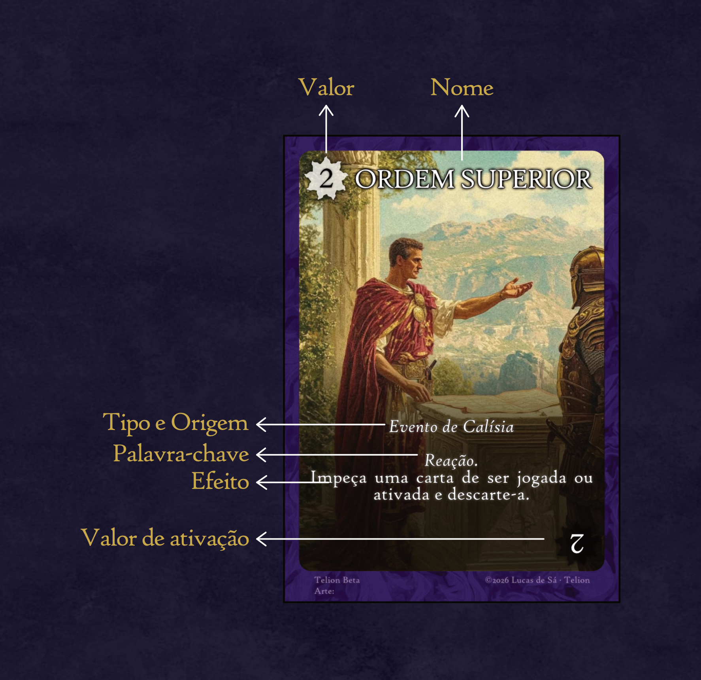
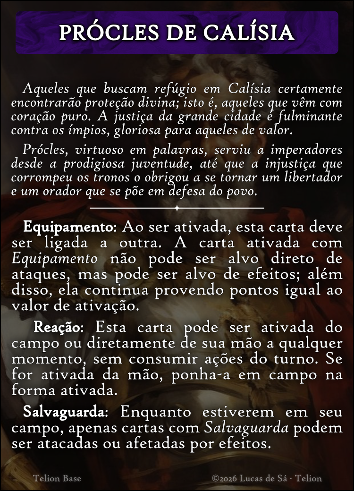

TELION
🏛️ Premissa do Jogo
Jogadores se reúnem num conselho divino para decidir o destino das nações e o futuro da próxima era, manipulando os próprios fios do destino, chamados telion.
Cada jogador constrói sua narrativa gloriosa através de suas cartas, mas o jogador que juntar as cartas do destino recebe o direito de tornar realidade aquilo que envisionou.
⚙️ Pré-Jogo e Preparação
Antes de iniciar o jogo, deve-se decidir quais sets serão usados. Os jogadores podem escolher os sets que preferirem ou sortear através das cartas de set. Em geral, é recomendado utilizar uma quantidade de sets igual ao número de jogadores. Atualmente, Telion possui 5 sets.
Os sets utilizados são embaralhados para formar o deck principal; as cartas de destino devem ser embaralhadas e colocadas em uma pilha separada.
Um jogador deve ser escolhido como o primeiro a jogar, e recebe o contador de rodadas. O contador de rodadas possui exatamente 3 casas e o marcador deve ser colocado na casa inicial que contém a letra α. Depois disso, cada jogador compra 5 cartas.
📜 Regras de Jogo
Iniciando do primeiro jogador e seguindo em sentido horário, cada jogador terá seu turno. No seu turno, o jogador possui duas opções:
⏳ Rodadas e Fases
Quando o turno voltar ao primeiro jogador, este jogador precisa mover o marcador do contador de rodadas em uma casa. O contador possui três casas (uma fase tipicamente dura exatamente 3 rodadas). Quando o marcador retornar à casa α, isso indica a conclusão de uma fase.
Resolução da Fase:
Ao concluir-se uma fase, os jogadores devem contar seus pontos totais em campo.
- O jogador com mais pontos vence a fase e compra uma carta de destino, ativando seus efeitos para toda a mesa. Caso haja empate, é preciso realizar uma rodada extra, até que haja um desempate.
- O jogador com menos pontos compra uma carta; caso haja empate na menor pontuação, todos os empatados compram uma carta.
🏆 Vitória: Vence o jogador que obtiver três cartas de destino.
🎴 Anatomia da Carta

- Valor (Topo): Valor de pontos concedidos enquanto a carta está em jogo na orientação normal.
- Nome da Carta
- Tipo e Origem: Indica a categoria da carta e sua região de origem (ex: Evento de Calísia).
- Palavras-Chave e Efeito: Descrição do que a carta faz. Tanto os efeitos quanto as palavras-chave só passam a funcionar quando a carta é ativada, a não ser que a carta ou a palavra-chave digam o contrário.
- Valor de Ativação (Base): Pontos concedidos pela carta assim que ela é ativada (virada de ponta-cabeça).
🖼️ Galeria de Cartas


👥 Modo Alternativo: Duplas
Recomenda-se o formato de duplas para jogos com seis jogadores ou mais.
- Contador de Rodadas: Neste formato, o contador de rodadas não é utilizado. Uma fase termina em apenas uma rodada.
- Posicionamento e Turnos: Cada dupla senta na posição oposta na mesa. Os turnos progridem individualmente como de costume.
- Campo Compartilhado: Os campos de cada jogador da dupla são considerados um campo só. Cartas ou efeitos que mencionem "campo" passam a se referir ao seu campo e ao da sua dupla de forma unificada.
- Vitória por Dupla: A dupla com mais pontos ao final da fase recebe uma carta de destino, e a dupla que acumular três cartas de destino vence o jogo.
- O restante das regras de Telion permanece inalterado.
🗺️ Os Sets de Telion
Conheça os cinco reinos e sets que compõem o universo de Telion, juntamente com suas cartas de set e palavras-chave:

Calísia é a grande cidade da justiça fulminante e da proteção divina. Seus líderes e oradores defendem o povo da corrupção dos tronos, trazendo virtude, salvaguarda e ordem.
Ao ser ativada, esta carta pode ser ligada a outra, colocando-a sob a carta a que será ligada. A carta ativada com Equipamento não pode ser alvo direto de ataques, mas pode ser alvo de efeitos; além disso, ela continua provendo pontos igual ao valor de ativação.
Esta carta pode ser ativada do campo ou diretamente de sua mão a qualquer momento, sem consumir ações do turno. Se for ativada da mão, ponha-a em campo na forma ativada.
Enquanto estiverem em seu campo, apenas cartas com Salvaguarda podem ser atacadas ou afetadas por efeitos.

Em Efelion, os fios do destino são maleáveis como a fumaça do altar. Dominado pelos astros e pelo sobrenatural, é o reino do mistério, das estrelas noturnas e das sombras.
Você pode jogar uma carta virada para baixo; essa carta terá o valor e os efeitos que você disser que ela tem. Outro jogador pode duvidar de suas afirmações. Se você for questionado, revele sua carta: caso ela tenha Oculto, o jogador que duvidou descarta duas cartas de sua mão, e a carta virada para baixo é virada para cima e passa a ter seus valores e efeitos reais; caso não tenha, ela é descartada e você descarta duas cartas de sua mão.

Nos campos de Osper, espíritos bravios conquistam a liberdade com perícia, e os dignos herdam o mistério do sagrado metal Osperita para proteger seu povo com armas imortais.
Ao ser ativada, esta carta deve ser ligada a outra. A carta ativada com Equipamento não pode ser alvo direto de ataques, mas pode ser alvo de efeitos; além disso, ela continua provendo pontos igual ao valor de ativação.
Esta carta pode ser ativada do campo ou diretamente de sua mão a qualquer momento, sem consumir ações do turno. Se for ativada da mão, ponha-a em campo na forma ativada.

Lorvad, o País dos Cavaleiros. Aqueles que crescem em Lorvad aprendem desde cedo que a vida não é dada, mas conquistada. O caminho é não dobrar os joelhos antes de brandir a lança, cavalgando pelos campos em busca de liberdade eterna.
(Este set não possui palavras-chave específicas).

Em Margun, os segredos dos mortos estão guardados sob o véu do submundo. Seus divinadores e almas pias escutam os sussurros do outro lado, observando a jornada das almas no lugar entre mundos.
(Este set não possui palavras-chave específicas).